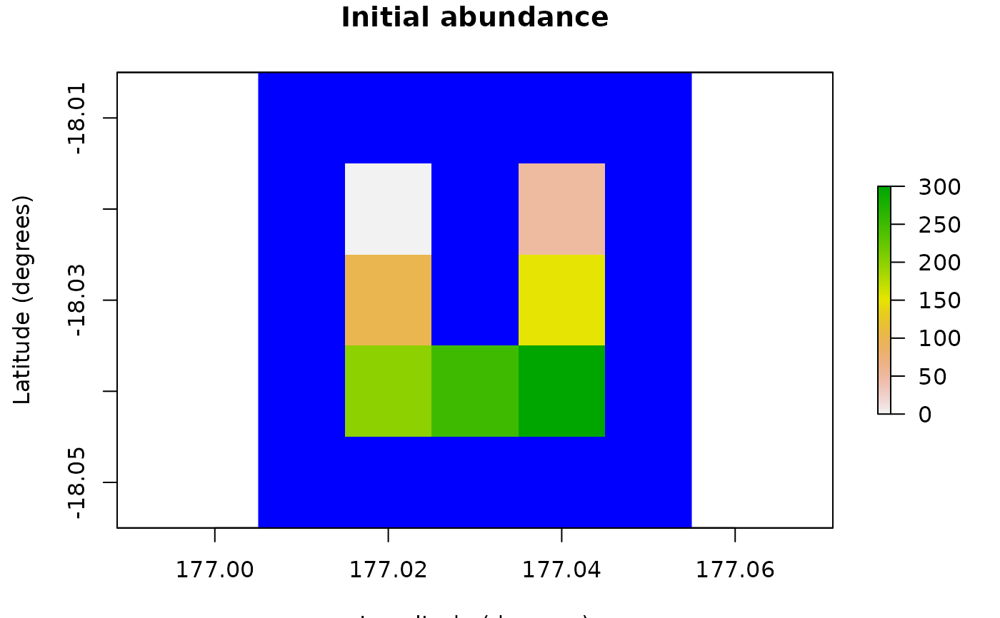
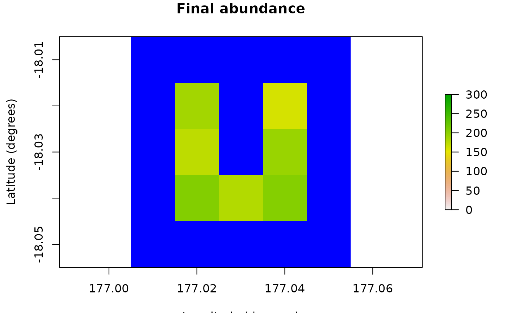

The poems package provides a framework of interoperable
R6 classes for building ensembles of viable models via the
pattern-oriented modeling (POM) approach (Grimm et al., 2005). The package includes
classes for encapsulating and generating model parameters, and managing the POM
workflow. The workflow includes: model setup; generating model parameters via
Latin hypercube sampling; running multiple sampled model simulations; collating
summary results; and validating and selecting an ensemble of models that best match
known patterns. By default, model validation and selection utilizes an approximate
Bayesian computation (ABC) approach (Beaumont, Zhang, & Balding, 2002), although
alternative user-defined functionality could be employed. The package also includes
a spatially explicit demographic population model simulation engine, which includes
default functionality for density dependence, correlated environmental stochasticity,
stage-based transitions, and distance-based dispersal. The user may customize the
simulator by defining functionality for translocations, harvesting, mortality,
and other processes, as well as defining the sequence order for the simulator
processes. The framework could also be adapted for use with other model simulators
by utilizing its extendable (inheritable) base classes.
Framework and workflow
The poems framework utilizes a hierarchy of extendable (inheritable)
R6 class objects that work together to manage a POM
workflow for building an ensemble of simulation models.

Create a simulation model template (a
SimulationModelor inherited class object) with appropriate fixed parameters for the study domain. Also define a study region via theRegionclass if the simulations are to be spatially explicit.Create generators (
Generatoror inherited class objects) for dynamically generating (non-singular) model parameters represented by data structures, such as arrays or lists.Generate a data frame of sampled variable model parameters using the
LatinHypercubeSampler. This will include singular model parameter values as well as input parameters for the generators.Create a
SimulationManagerobject configured with the simulation model (template), the generators, and the sample parameter data frame. Running this manager sets and runs the models via the simulator function for each set (row) of sampled parameters, utilising the generators when required. The results of each model simulation run are written to a file. A simulation log file is also created.Create a
ResultsManagerobject configured with the sample parameter data and result file details. Running this manager constructs a data frame of configured summary metrics, one row for each simulation result file. The manager utilizes theSimulationResults(or inherited) class to encapsulate, and dynamically generate additional derived, results. The metrics are generated via user-defined specifications and functions for calculating each metric from the results (objects).Create a
Validatorobject configured with the sample parameter data, summary metrics, and target (observed) pattern values for each metric. By default, the validator utilizes an approximate Bayesian computation (ABC) validation method via theabclibrary, although the validator (call) function can be configured to utilize other library or user-defined functions. Running the validator (with appropriate call function configuration) produces an ensemble of models (indices to sampled parameters) that were found to best match the targets. Diagnostic outputs may also be produced (depending on the call function and its configuration).The selected models may then be utilized for further studies, such as alternative model scenarios or counterfactuals. This can be achieved by utilizing the selected subset of parameter samples to form inputs for further model simulations (by repeating the steps above).
Population modeling components
population_simulatorfunction: The simulation engine's main function processes the model input parameters, controls the flow, calling other function modules as required, and returns the results of each simulation.population_densityfunction: Module for configuring and performing density dependence calculations at each simulation time step. A user-defined function may be utilized.population_env_stochfunction: Module for configuring and stochastically applying environmental variability to stage-based population transition rates at each simulation time step.population_transitionsfunction: Module for configuring and performing stage-based demographic transitions of population abundances at each simulation time step.population_transformationfunction: Module for configuring and performing user-defined transformations to staged population abundances. This functionality is utilized when defining functions fortranslocation,harvest,mortality, or other custom transformative functions.population_dispersalfunction: Module for configuring and performing dispersal calculations at each simulation time step. A user-defined function may be utilized.population_resultsfunction: Module for configuring, initializing, and collating simulation results.PopulationModelclass: Inherited fromSimulationModel, this class encapsulates the input parameters utilized by thepopulation_simulator.SimulatorReferenceclass: This simpleR6class enables user-defined functionality to maintain persistent (attached) attributes and to write to the simulator results.SpatialCorrelationclass: Provides functionality for generating parameters that can be utilized when optionally applying a spatial correlation within the simulator's environmental variability calculations.DispersalGeneratorclass: Inherited fromGenerator, this class provides functionality for generating distance-based dispersal parameters that can be utilized when performing dispersal calculations.DispersalFrictionclass: Provides functionality for adjusting the (equivalent) distance between population cells given a spatio-temporal frictional landscape. These adjustments may be utilized by theDispersalGenerator.PopulationResultsclass: Inherited fromSimulationResults, this class encapsulates the results generated by thepopulation_simulator, as well as dynamically generating additional derived results.
References
Beaumont, M. A., Zhang, W., & Balding, D. J. (2002). 'Approximate Bayesian computation in population genetics'. Genetics, vol. 162, no. 4, pp, 2025–2035.
Grimm, V., Revilla, E., Berger, U., Jeltsch, F., Mooij, W. M., Railsback, S. F., Thulke, H. H., Weiner, J., Wiegand, T., DeAngelis, D. L., (2005). 'Pattern-Oriented Modeling of Agent-Based Complex Systems: Lessons from Ecology'. Science vol. 310, no. 5750, pp. 987–991.
Examples
# Here we demonstrate building and running a simple population model. For a
# demonstration of the POM workflow with the model, see vignette("simple_example").
# Demonstration example region (U Island) and initial abundance
coordinates <- data.frame(
x = rep(seq(177.01, 177.05, 0.01), 5),
y = rep(seq(-18.01, -18.05, -0.01), each = 5)
)
template_raster <- Region$new(coordinates = coordinates)$region_raster # full extent
template_raster[][-c(7, 9, 12, 14, 17:19)] <- NA # make U Island
region <- Region$new(template_raster = template_raster)
initial_abundance <- seq(0, 300, 50)
raster::plot(region$raster_from_values(initial_abundance),
main = "Initial abundance", xlab = "Longitude (degrees)",
ylab = "Latitude (degrees)", zlim = c(0, 300), colNA = "blue"
)

# Set population model
pop_model <- PopulationModel$new(
region = region,
time_steps = 5,
populations = 7,
initial_abundance = initial_abundance,
stage_matrix = matrix(c(
0, 2.5, # Leslie/Lefkovitch matrix
0.8, 0.5
), nrow = 2, ncol = 2, byrow = TRUE),
carrying_capacity = rep(200, 7),
density_dependence = "logistic",
dispersal = (!diag(nrow = 7, ncol = 7)) * 0.05,
result_stages = c(1, 2)
)
# Run single simulation
results <- population_simulator(pop_model)
results # examine
#> $all
#> $all$abundance
#> [1] 1032 1137 1264 1278 1301
#>
#> $all$abundance_stages
#> $all$abundance_stages[[1]]
#> [1] 606 693 771 759 752
#>
#> $all$abundance_stages[[2]]
#> [1] 426 444 493 519 549
#>
#>
#>
#> $abundance
#> [,1] [,2] [,3] [,4] [,5]
#> [1,] 50 115 153 185 187
#> [2,] 87 130 170 157 160
#> [3,] 133 163 192 177 173
#> [4,] 170 171 186 187 193
#> [5,] 194 175 180 181 206
#> [6,] 183 187 198 190 178
#> [7,] 215 196 185 201 204
#>
#> $abundance_stages
#> $abundance_stages[[1]]
#> [,1] [,2] [,3] [,4] [,5]
#> [1,] 31 65 95 109 114
#> [2,] 52 81 106 90 91
#> [3,] 77 98 129 99 115
#> [4,] 103 102 105 121 107
#> [5,] 119 97 112 105 117
#> [6,] 105 117 125 115 94
#> [7,] 119 133 99 120 114
#>
#> $abundance_stages[[2]]
#> [,1] [,2] [,3] [,4] [,5]
#> [1,] 19 50 58 76 73
#> [2,] 35 49 64 67 69
#> [3,] 56 65 63 78 58
#> [4,] 67 69 81 66 86
#> [5,] 75 78 68 76 89
#> [6,] 78 70 73 75 84
#> [7,] 96 63 86 81 90
#>
#>
raster::plot(region$raster_from_values(results$abundance[, 5]),
main = "Final abundance", xlab = "Longitude (degrees)",
ylab = "Latitude (degrees)", zlim = c(0, 300), colNA = "blue"
)
